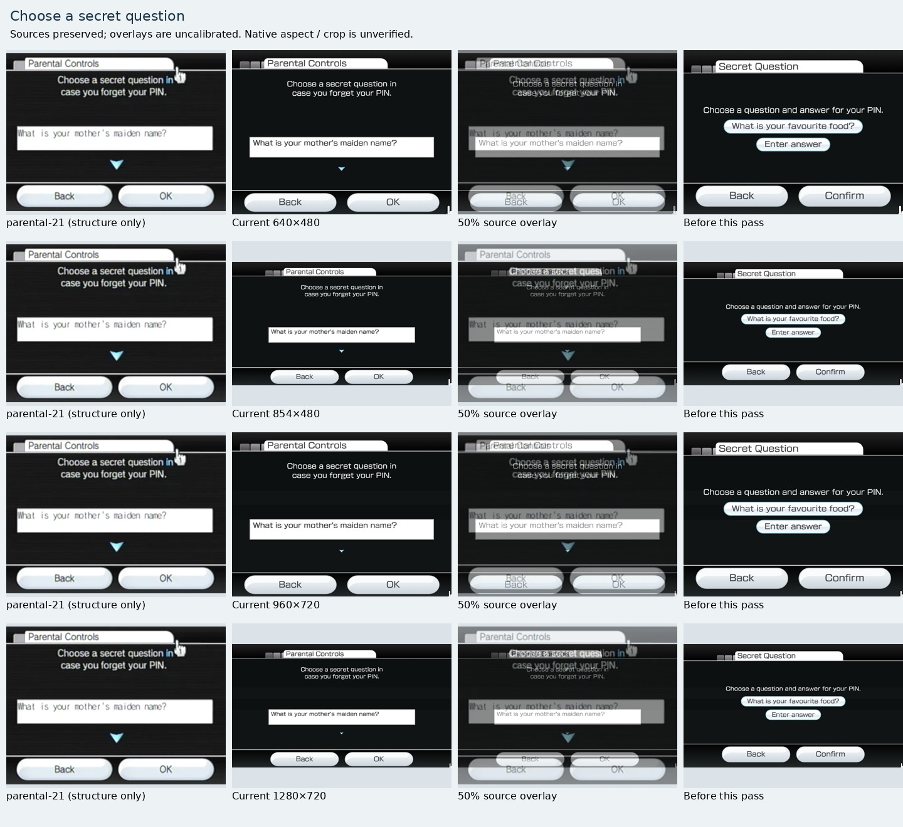
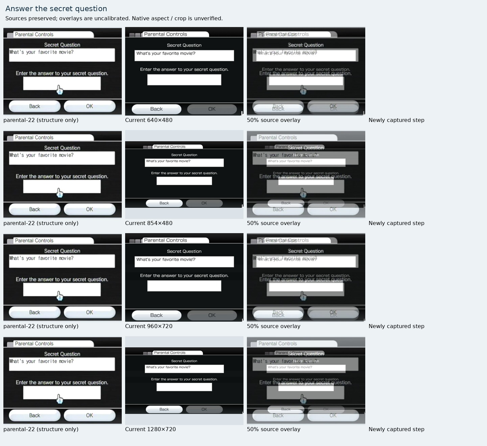
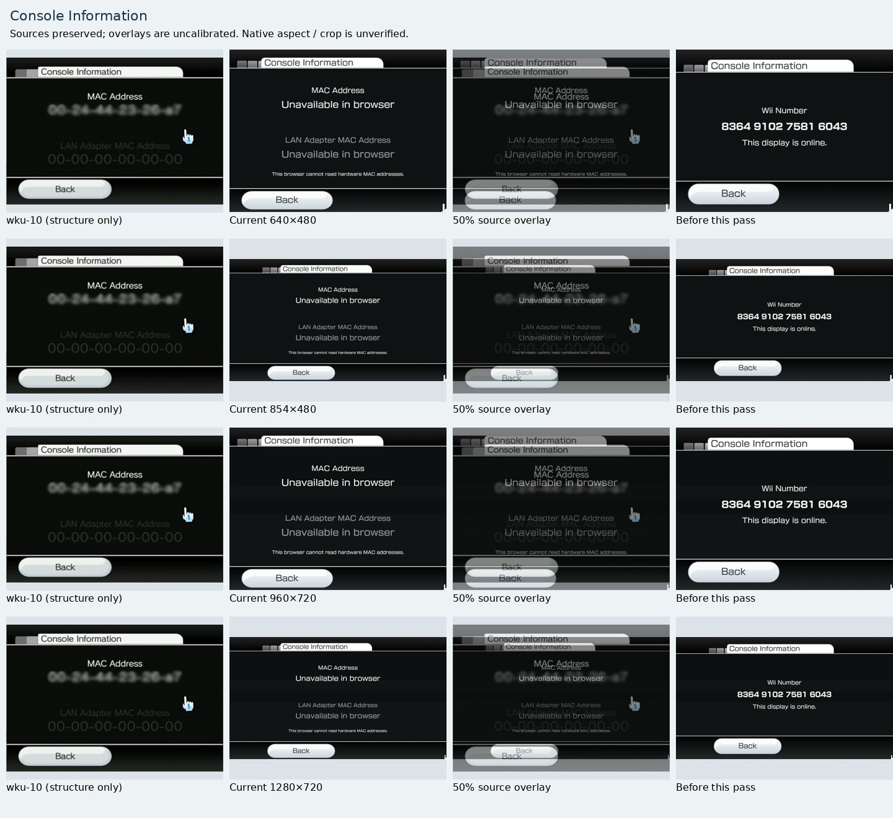
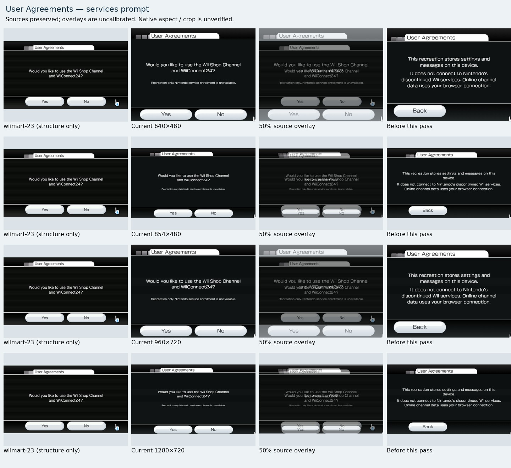
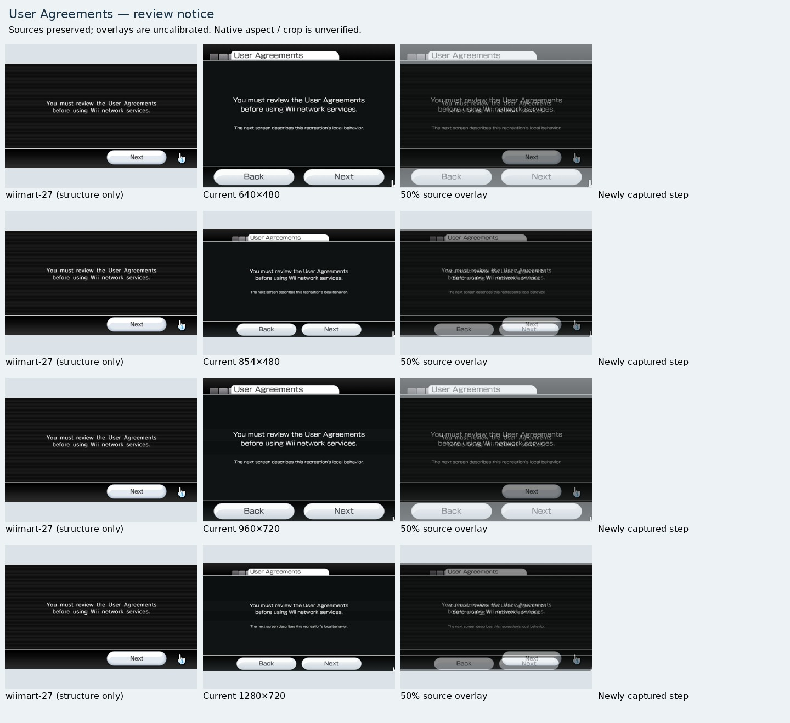
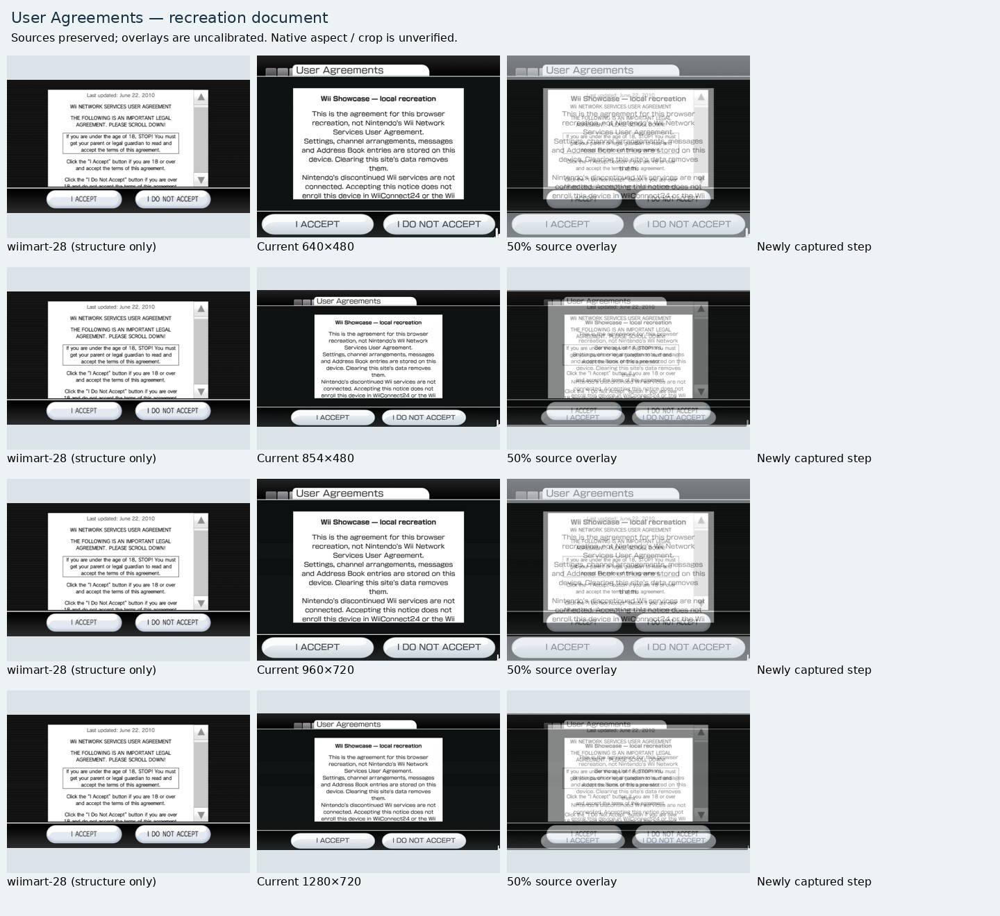
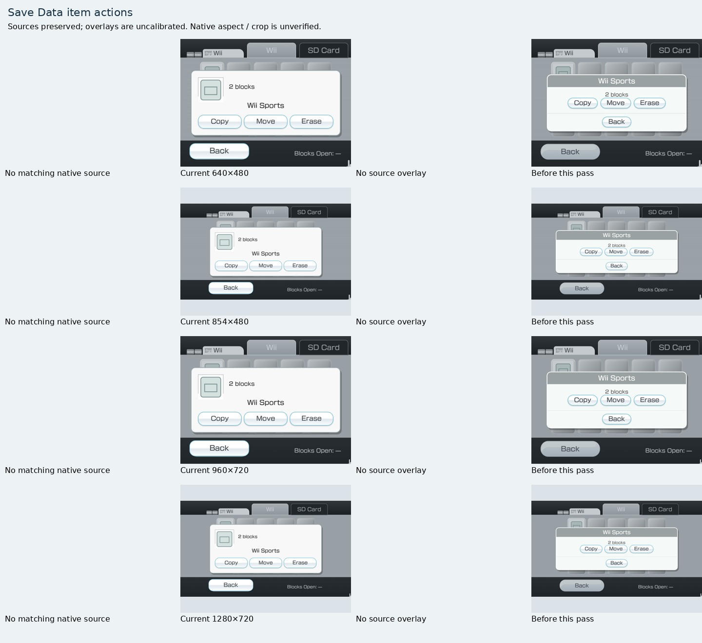
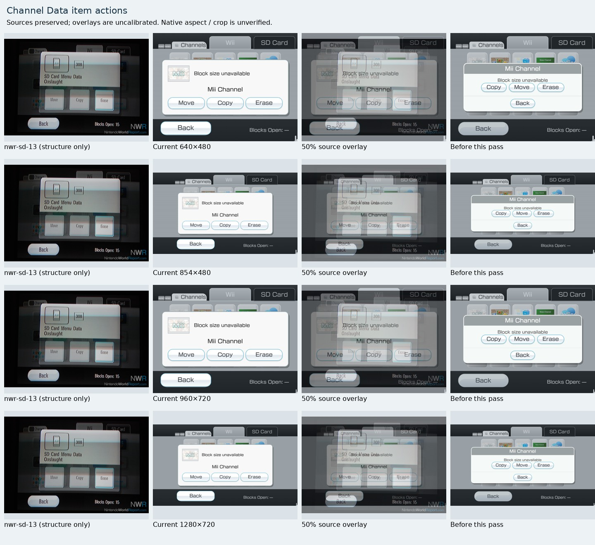

Source-backed interface fixes
Manual visual follow-up of all 32 changed/new captures at 640x480, 854x480, 960x720 and 1280x720, including source and prior overlays where available. Eight inspection sheets were viewed after generation; this is separate from the historical 66-screen review.
Interactive source overlays · Historical 66-screen review · Follow-up findings and evidence hashes
32 fresh captures, 88 flow checks. Source photographs and crops are structure-only references; their display aspect is unverified. The source column keeps its original ratio, including in wide comparisons. No screen is certified pixel-identical.
Remaining work
- Full native parental setup wizard, returning-user PIN recovery and remaining secret-question options are not yet reproduced.
- SD Menu onboarding, Auto Manage criteria and channel-list flows remain absent; the existing occupied-slot error fixture has different semantics from native memory-block exhaustion.
- Calendar settings, Screen settings, Sensor Bar submenu, WiiConnect24 submenu and Operations Guide still lack usable direct references.
- Original SD/storage capacity, native channel block metadata, region/firmware-specific variants and exact 16:9 geometry remain unverified.
- No native pixel-accuracy percentage is assigned. Source images retain their original bytes and ratios; opacity overlays are uncalibrated.
Choose a secret question
Now uses Parental Controls title, a two-line prompt, rectangular question field, down arrow and Back/OK. Header/footer and text sizes are reduced from the prior adapter. Source is cropped and its aspect is unverified. Only two source-confirmed question options plus any existing saved question are available; the full native question inventory remains incomplete.
parental-21 — interactive comparison · Publisher
640×480854×480960×7201280×720

Answer the secret question
Answer entry is a distinct step with question, prompt and rectangular answer field. Back returns to selection without committing; OK saves both values. Blank-answer OK is disabled, so its appearance differs from the filled source. Header position, field offsets, arrow artwork and proportions remain fitted approximations.
parental-22 — interactive comparison · Publisher
640×480854×480960×7201280×720

Console Information
The incorrect Wii Number/online-status group is replaced with native MAC Address and LAN Adapter MAC Address groups. Browser values and explanatory text deliberately differ because hardware identifiers cannot be read. Header/footer are smaller. Unverified source resizing prevents precise alignment, especially in 16:9.
wku-10 — interactive comparison · Publisher
640×480854×480960×7201280×720

User Agreements — services prompt
Yes/No service prompt now replaces the generic information page. Recreation-specific enrollment limits remain visible. Buttons, header and prompt have the expected hierarchy; source scanlines/crop and exact wide layout are unverified.
wiimart-23 — interactive comparison · Publisher
640×480854×480960×7201280×720

User Agreements — review notice
The review notice and Next are a separate step. This adapter adds Back and explanatory recreation text; native source has only Next. Header, frame and fonts are shared approximations.
wiimart-27 — interactive comparison · Publisher
640×480854×480960×7201280×720

User Agreements — recreation document
Scrollable white document panel and I ACCEPT / I DO NOT ACCEPT actions replace a missing step. The document is explicitly for Wii Showcase, not Nintendo terms. Acceptance/decline only changes a local preference and never enables online data. Source document content, scrollbar artwork and exact geometry differ intentionally or remain approximate.
wiimart-28 — interactive comparison · Publisher
640×480854×480960×7201280×720

Save Data item actions
Selected save data now uses a thumbnail/block summary, item name and larger action row. Modal Back appears at the frame footer while focus and Escape stay in the dialog. No exact native Wii-save item reference was collected; the generic save thumbnail remains a reconstruction and this screen is not certified against a matching source.
No exact matching native screenshot collected.
640×480854×480960×7201280×720

Channel Data item actions
The native structural match is stronger: thumbnail/block information above item name, followed by Move / Copy / Erase in the source order. Known Mii art is reused. Unknown channel sizes remain unavailable rather than invented. Panel width, action shapes, title placement and background proportions still differ from the photographed SD Card Menu Data example.
nwr-sd-13 — interactive comparison · Publisher
640×480854×480960×7201280×720
